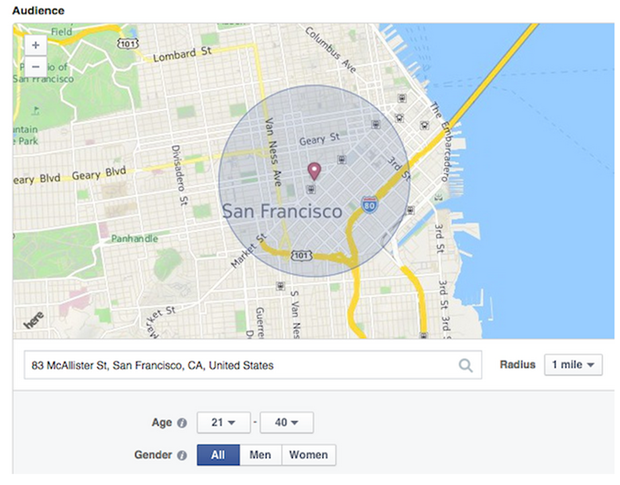
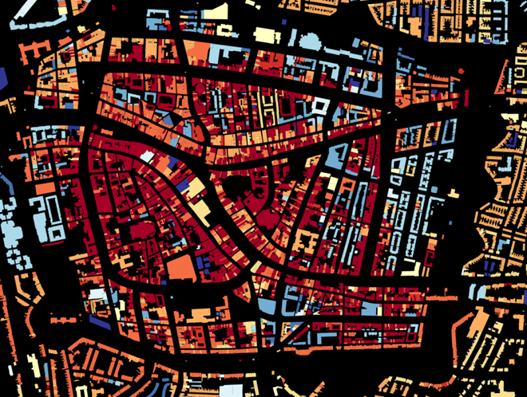
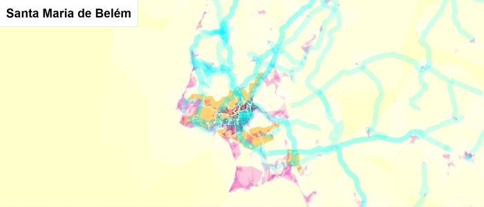
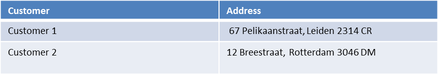
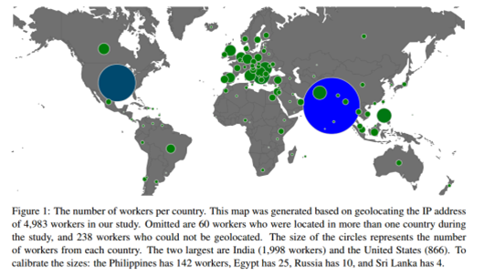

'Escape' or 'o' to see all sides, F11 for full screen, 's' for speaker notes
Localization and value creation
Clément Levallois <levallois@em-lyon.com> 2017-31-07
last modified: 2023-05-15
== !
1. Localization brings interesting new dimensions
Localization relates activities to physical space, in at least 4 different ways:
Place: Where is this activity happening?
Distance: Are these two agents neighbors?
Movement: Is this agent travelling? (together with speed and acceleration)
Structure: How are these agents and activities configured in space?
a. Example - Facebook Local Awareness Feature

Figure 1. Facebook Local Awareness Ad Feature
“Helping Local Businesses Reach More Customers”:
Target ads to people living in a radius around your store.
Can also target people who have been recently in this radius.
b. Example - Placemeter
Figure 2. Placemeter analyzes pedestrian traffic through video
“Using computer vision to analyze real life activity”:
Cameras placed in public places (possibly at the windows of private households)
Video is treated on the device attached to the camera, not saved.
measures pedestrian traffic in front of stores to provide "main street analytics"
c. Example - Data @GrandLyon
Figure 3. "https://data.grandlyon.com
→ Making data open to foster innovation for citizens and businesses
→ Includes many datasets with geographical relevance
Similar initiatives in large cities:
2. The visual power of maps
a. Map: useful metaphors with a political dimension
The visual metaphor of the map is widely understood. It makes exploration easy: all is visible at once, while zoom allows for details as well. Multiple information cues (colors, symbols, shapes, layers, etc.) help display information.
To keep in mind: maps always an interpretative layer on the territory they display. Watch this extract from the TV series "The West Wing“, Season 2, Episode 16:
b. Example: how to explore the real estate market in the Netherlands

Figure 4. Visual exploration of real estate in NL
(source: http://code.waag.org/buildings/)
Every single building of the Netherlands on a map
Colored by year of construction
With role (retail or housing?) and surface highlighted
Zoomable and draggable
c. Key resources to work with maps

Figure 5. Stamen Design
Agency based in San Francisco
Famous for cutting research in map design
Figure 6. MapBox
Mapbox.com
SaaS to create interactive maps in web pages and mobile apps.
Figure 7. Openstreetmap
OpenStreetMap
A crowd sourced open source map of the world. Available through API.
3. How to represent “space” in data format?
a. The specifity of geospatial data
Data is traditionally stored in tables in relational databases, taking this form:

Figure 8. A table with two entries
A table can have millions of rows. How to retrieve information such as "get all customers living in Rotterdam"? "SQL" (Structured Query Language) is a system to express these kinds of queries.
In the table shown above, a query written in SQL look in the "Address" column and inspect all the text to find if "Rotterdam" is present or not.
This is highly inefficient (slow), and more complex queries would not work. For example, the table above could not be queried for "get all customers living in a 10 miles radius around Rotterdam".
So how to store geospatial data in a way that makes it easy to retrieve?
b. Solutions to store and retrieve geospatial data
SQL solutions
Even if SQL does not perform well on geospatial data "out of the box", extra modules have been developed to deal with it.
Microsoft SQL server since 2008:
Possible to store and query “geometric” and “geographic” objects
Possible to use complex queries on these objects
NoSQL solutions
Since ~ 2005, new types of databases have been developed, which don’t follow a table structure in order to facilitate the query of special kinds of data, like geospatial data or network data.
These new databases are called "NoSQL databases"
Figure 9. the Carto Platform
Carto (ex CartoDB): specializing in geospatial data + mapping.

Figure 10. Neo4J, a database for networks
Neo4J Spatial enables to mix the logics of networks with places in the data, so that you can make such queries on your data:
"Select all streets in the Municipality of NYC where at least 2 of my friends are walking right now."
Figure 11. GeoJSon and TopoJSon are derivations of the json formats for geospatial data
GeoJSon and TopoJSon: 2 data formats to represent geometric and geographic data developed for Javascript applications – and beyond.
4. Two friends for localization: personalization and real-time
Knowing the person, its location, at a precise time unlocks meaningful push notifications
Push notifications are these alerts sent by an app on your mobile, visible as transient icons. It gets “push marketing” back on solid foundations: only to the right person, at the right place, at the right time (and at the right frequency)
5. Ending with a provocation: Challenging the usefulness of location
a. Localization is about people and territories
Data is a fungible and universal material (just 0s and 1s)
Geographical coordinates are perfectly universal (just need a longitude and latitude)
and yet… the logic of territories is shaping data: there is a geography of data. Representations with a supposedly universal and transparent coordinate system blinds us to this fact.
This argument is made by Frederic Martel in his book "Smart": Internet does not flatten everything into one big model. There are several Internets with their geography, politics and sociology.
Figure 12. Smart by Frederic Martel
Here are a few dimensions on which geography plays a strong role:
Data protection: not all countries are equal
Data handling devices: India and Africa have a larger shareof mobile devices.
Data production: Amazon Mechanical Turk is a service of data production through the hiring of a distributed crowd of workers. It tends to "erase distance", since workers can be hired by anyone anywhere.
Yet, the geographical distribution of workers on Amazon Mechanical Turk is far from even. The following figure is taken from this study:

Figure 13. Distribution of Amazon Mechanical Turk workers
It shows that the dream of "data and the web" erasing distances and geographical disparities is just a dream, social geography remains a strong factor in the structuring of remote workers.
b. Distributed systems – the end of territories?
The libertarian dream of the cypher-punks: individuals transact without consideration for their nationality, currency, legal system, political regime.
Organizations, banking, voting systems, … any aggregated human activity could emerge without reference to local territories or institutions. Just groups of individuals transacting voluntarily and securely, without a notion of place or distance.
Bitcoin: the currency for these transactions?
Torrent: The exchange platform for numeric goods?
Ethereum: the platform where contracts are made and executed?
The end
Find references for this lesson, and other lessons, here.

This course is made by Clement Levallois.
Discover my other courses in data / tech for business: https://www.clementlevallois.net
Or get in touch via Twitter: @seinecle